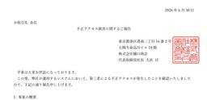
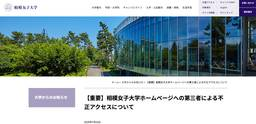
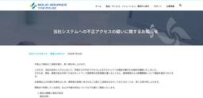
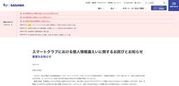
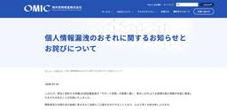
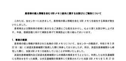
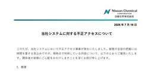
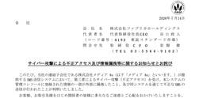
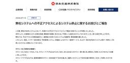

サイバーセキュリティ・情報漏洩ニュース – サイバーセキュリティ.com
https://cybersecurity-jp.com
サイバーセキュリティーサービスの比較・資料請求サイト｜中小企業向けのセキュリティ対策を考える「サイバーセキュリティ」に関する情報メディア。日本の中小企業の情報を守るため、最新のセミナー・人材育成・製品・中小企業向けのセキュリティ対策を考えるサイバーセキュリティ情報サイトです。
フィード
医業停止中に医療行為の疑い 元医師を電子カルテ不正アクセス容疑で再逮捕
サイバーセキュリティ・情報漏洩ニュース – サイバーセキュリティ.com
大阪府警は、退職した病院に侵入し、電子カルテシステムへ不正にアクセスしたとして、和歌山市に住む39歳の元医師を、不正アクセス禁止法違反と建造物侵入の疑いで再逮捕しました。 警察によりますと、元医師は2026年3月中旬、以 […]
16時間前

株式会社樋口商会、不正アクセス被害を公表 子会社の財務情報などが流出した可能性
サイバーセキュリティ・情報漏洩ニュース – サイバーセキュリティ.com
画像：株式会社樋口商会より引用 株式会社樋口商会は2026年6月30日、同社が運用するシステムで第三者による不正アクセスが発生し、子会社の財務情報や取引先情報が流出した可能性があると発表しました。 同社によると2026年 […]
16時間前

相模女子大学ホームページに不正アクセス、一部利用者を外部サイトへ誘導
サイバーセキュリティ・情報漏洩ニュース – サイバーセキュリティ.com
画像：相模女子大学より引用 学校法人相模女子大学は2026年7月16日、大学ホームページが第三者による不正アクセスを受けたと発表しました。 相模女子大学によると2026年7月13日、検索サイトで同大学を検索した際、「この […]
2日前

ソリッドアドバンス、社内システムへの不正アクセス疑い 一部法人向けサービスを停止
サイバーセキュリティ・情報漏洩ニュース – サイバーセキュリティ.com
画像：ソリッドアドバンス株式会社より引用 ソリッドアドバンス株式会社は2026年7月16日、社内システムの一部で、外部からの不正アクセスによるマルウェア感染が疑われる端末を確認したと発表しました。 説明によると、同社が異 […]
2日前

佐川急便「スマートクラブ」で個人情報漏えい 約7万人に影響の可能性
サイバーセキュリティ・情報漏洩ニュース – サイバーセキュリティ.com
画像：佐川急便株式会社より引用 佐川急便は2026年7月18日、会員制Webサービス「スマートクラブ」でのシステム不具合に伴い、配達予定通知メールの一部に、別の利用者の個人情報が表示される事象が発生し、合計約7万人の利用 […]
3日前

海外貨物検査、サポート詐欺で個人情報約1,000件が漏洩した可能性
サイバーセキュリティ・情報漏洩ニュース – サイバーセキュリティ.com
画像：海外貨物検査株式会社より引用 海外貨物検査株式会社は2026年7月14日、同社と契約する有機JAS認証審査員がサポート詐欺の被害に遭い、貸与していたパソコンから顧客の個人情報が外部に漏洩した可能性があると発表しまし […]
3日前

名古屋医療センター、患者591人分の個人情報を含むUSBメモリを一時紛失
サイバーセキュリティ・情報漏洩ニュース – サイバーセキュリティ.com
画像：名古屋医療センターより引用 名古屋医療センターは2026年7月17日、患者591人分の個人情報が保存されたUSBメモリを職員が一時紛失したと発表しました。 説明によると、USBメモリは職員の私物であり、2026年5 […]
4日前

日産化学、社内システムへの不正アクセスの可能性 外部専門家と影響範囲を調査
サイバーセキュリティ・情報漏洩ニュース – サイバーセキュリティ.com
画像：日産化学株式会社より引用 日産化学株式会社は2026年7月16日、同社のシステムに対して第三者による不正アクセスの可能性を確認したと発表しました。 同社によると2026年7月1日、社内システム上で不審な活動を検知し […]
4日前

ファブリカHD子会社のSMS送信システムに不正アクセス、情報漏えい懸念や不正送信
サイバーセキュリティ・情報漏洩ニュース – サイバーセキュリティ.com
画像：株式会社ファブリカホールディングスより引用 株式会社ファブリカホールディングスは2026年7月14日、連結子会社のメディア4uが提供するSMS送信システムが6月24日に第三者から不正アクセスを受け、管理情報の漏洩と […]
8日前

日本交通、マルウェア感染で社内システム停止 配車やハイヤー予約に影響
サイバーセキュリティ・情報漏洩ニュース – サイバーセキュリティ.com
画像：日本交通株式会社より引用 日本交通株式会社は2026年7月13日、同社の社内システムが外部から不正アクセスを受け、マルウェアに感染したことを発表しました。 同社によると、攻撃は2026年7月11日未明に発生し、ハイ […]
8日前